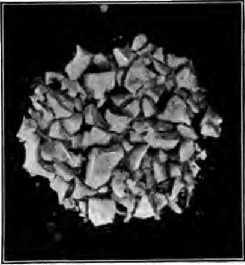
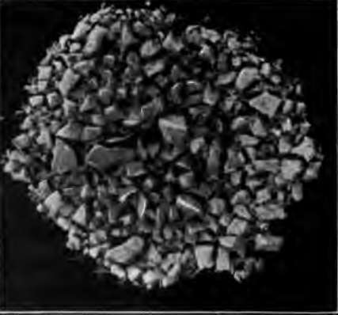

How Food Is Used By The Body. Part 4
Description
This section is from the book "The Human Body And Health", by Alvin Davison. Also available from Amazon: The Human Body and Health.
How Food Is Used By The Body. Part 4
The liver is the largest gland of the body. It is of a dark red color, and lies directly below the diaphragm. On its under side is a sac, called the gall bladder, used in storing bile when there is no food in the intestine.
The chief use of the liver, besides forming bile and stopping many of the poisons that may enter the body with the food, is to change sugars into a kind of starch, and store it until needed. It also changes some of the waste matter of the body into a form so that it can pass out through the kidneys, when carried there by the blood.
Eating And Health
Fig. 39. Hard boiled white of egg chewed ten times.
Fig. 39. Hard boiled white of egg chewed fifty times.
In young persons, most of the headache, fe-verishness, foul breath, and pain in the stomach and intestines result from not giving the digestive organs the right kind of care. Children often eat too much candy, pickles and rich food, and wash their food down with a swallow of water, instead of chewing it enough to break it into fine bits and moisten it completely with saliva.
After six years of age children should eat only three times daily. The taking of food every two or three hours spoils the appetite, and makes the organs give out a weaker digestive juice. Cake, candy and pies or preserves should be eaten only at meal time, and then in small quantities. Sweetmeats often tempt persons to eat too much, and therefore plain food is much better for children. Some foods such as cucumbers, raw onions and hot bread are hard to digest, and should be used very sparingly by children.
Digestion is greatly aided by fresh air and exercise, but violent exercise should not be taken within an hour after eating, as it draws the blood away from the stomach where it is needed to form gastric juice. The use of alcoholic drinks, or much tea, coffee, or ice water at meal time is a common cause of indigestion.
How Strong Drink Hurts The Stomach
The soft, tender lining of the stomach is full of blood vessels forming a rich network. Strong drink, even in small quantities, makes these vessels become larger. This causes the glands to pour out gastric juice when it is not needed. In those taking strong wine or whisky several times daily, the vessels of the stomach remain constantly enlarged. The natural pink color of the stomach lining becomes changed to a reddish hue like the mucous lining of the throat when it is sore.
Alcohol may also cause certain glands in the stomach to pour out a thick, slimy fluid, like that in the nose during a cold. This ropy mucus surrounds the particles of food so that the digestive juices cannot dissolve them.
Wine And Whisky Hinder Digestion
Some doctors think that a little wine taken at meal time by older persons helps digestion. Late experiments show that wine and whisky help digestion but little in any case, and in some persons they make digestion slower.
Alcohol weakens the action of the muscles in the walls of the stomach, so that they do not squeeze the food about and mix it with the gastric juice. The food may lie in a mass while germs of decay act on it, and thus cause bad breath.
The cause of improvement in many delicate persons, after giving up the use of beer and wine, is often due to better digestion brought about by the strong action of the stomach muscles.
Learning How Alcohol Affects The Stomach
Wine sometimes makes persons feel better after taking it with their meals because it numbs the nerves which would otherwise tell of any pain in the stomach. The real effect of strong drink on digestion has been learned by studying people who have used alcohol for a time and then lived without it.
A man by the name of St. Martin had a hole shot through the front wall of his body, and into his stomach. As the wound healed leaving an opening, the doctors were able to watch the digestion of the food, and the effects of the alcohol given him. Much alcohol caused blood to ooze out from the tender lining of the stomach.
Practical Questions
1. How is food changed before it enters the blood? 2. What is a gland? 3. Name some glands. 4. What is a duct? 5. What is the alimentary canal? 6. What are the two parts of the trunk cavity? 7. Name the chief organs in each. 8. Where is mucous membrane present? 9. What forms the saliva? 10. What is the result of chewing food? 11. Why should food be chewed thoroughly? 12. Why is chewing tobacco harmful? 13. In what way does smoking injure the mouth? 14. How does alcohol affect the mouth? 15. Describe the milk teeth. 16. When does the first permanent tooth appear? 17. How many permanent teeth are there? 18. Describe the enamel. 19. What causes teeth to decay? 20. Why should the teeth be brushed often? 21. How many decaying teeth have you? 22. Describe the stomach. 23. How is the food mixed with the juices of the stomach? 24. How can the quantity of gastric juice be increased? 25. Describe the small intestine. 26. Tell how the food is changed in the small intestine. 27. How does the food get into the blood? 28. Describe the pancreas. 29. Describe the liver. 30. How does alcohol affect the stomach?
Suggestions For The Teacher
During the study of this chapter, the teacher should observe the teeth of the pupils and where necessary, by a kind note to the parents suggest the importance of preserving the teeth as an aid to health. Among the lower grades nearly four fifths of the pupils are found to have decayed teeth which in many cases will later cause serious sickness and in some instances death.
Continue to: